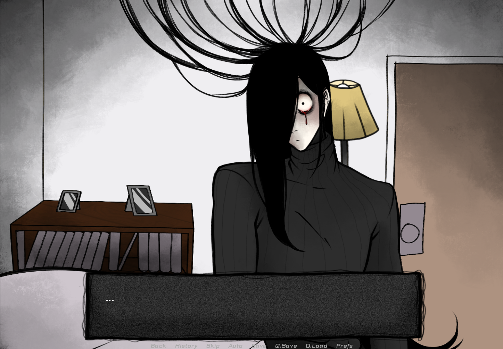
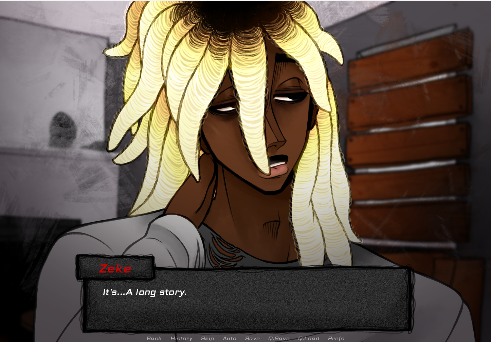

YOU MAKE THIS HOUSE A HOME
Español • PC • Android
Despierta en una casa desconocida junto a alguien que asegura ser tu pareja, pero sin recuerdos de tu pasado ni respuestas sobre lo ocurrido. Explora la misteriosa residencia, descubre secretos ocultos y toma decisiones en una historia de horror psicológico, romance y misterio.
Capturas


